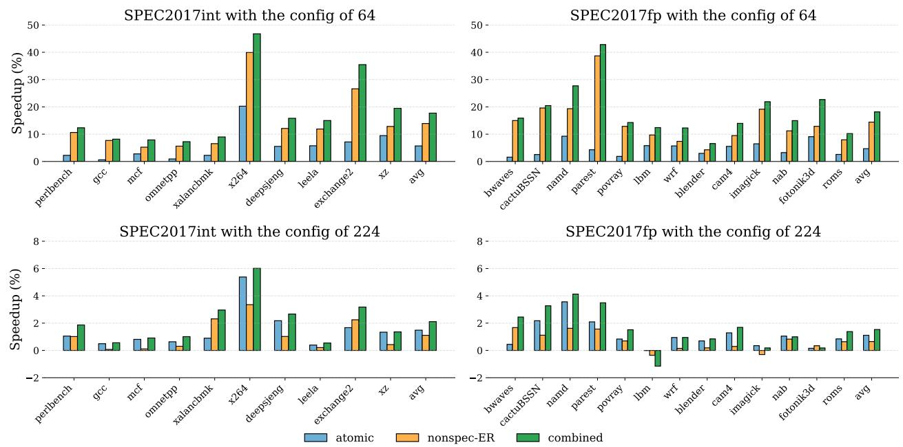
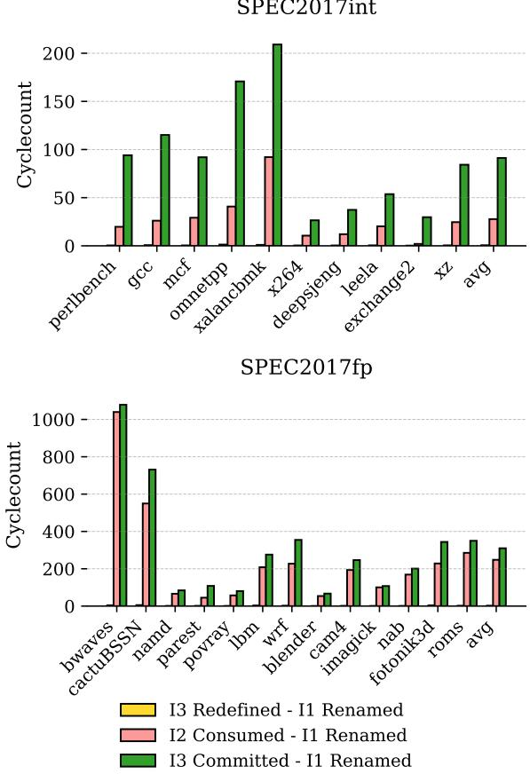

ATR: Out-of-Order Register Release Exploiting Atomic Regions 论文解析¶
0. 论文基本信息¶
作者 (Authors)
- Yinyuan Zhao
- Surim Oh
- Mingsheng Xu
- Heiner Litz
发表期刊/会议 (Journal/Conference)
- 58th IEEE/ACM International Symposium on Microarchitecture (MICRO '25)
发表年份 (Publication Year)
- 2025
1. 摘要¶
目的
- 解决现代superscalar processors中因保守的寄存器释放策略导致的physical register file压力过大问题。传统方法需等待重定义该架构寄存器的指令commit后才释放旧物理寄存器，造成资源浪费。
- 克服现有early register release技术的缺陷：speculative early release不安全（需复杂的shadow register file进行checkpoint），而non-speculative early release过于保守（需等待指令precommit，即所有更早的分支和异常指令都已解决）。
方法
- 提出 ATR (Atomic register Release) 技术，其核心是识别并利用atomic commit regions（原子提交区域）。
- Atomic commit regions被定义为不包含任何conditional branches、indirect jumps或exception-causing instructions（如load/store, 除零）的指令序列。该区域内的所有指令保证会原子性地一起commit或flush。
- 基于上述洞察，ATR允许在区域内分配的物理寄存器，在其值被完全消费（consumer count归零）且被重定义后，即可out-of-order地安全释放，无需等待重定义指令precommit或commit。
- 实现上，通过在physical register table (PRT)中为每个物理寄存器增加一个3-bit consumer counter来追踪消费者数量，并在rename stage引入一个简单的逻辑，当遇到分支或异常指令时，将当前所有活跃的物理寄存器标记为no-early-release。
- 为防止double-free，在rename阶段若检测到一个寄存器在原子区域内被重定义，则将其previous ptag字段置为invalid，确保该寄存器仅由ATR机制释放。

Figure 7: The proposed ATR design.
结果
- 机会分析：在SPEC2017基准测试中，平均有17.04%的整数寄存器和13.14%的浮点寄存器位于atomic commit regions内，存在巨大的早期释放潜力。

Figure 6: Atomic register ratio.
- 性能提升：在64-entry寄存器文件配置下，ATR为SPEC2017int带来平均5.13%的IPC提升；在224-entry配置下，提升为1.48%。

Figure 10: IPC speedup over the baseline with 64 and 224 physical registers.
- 资源节省：ATR能将寄存器文件大小需求减少27.1%，同时性能损失控制在**3%**以内。

Figure 15: Overhead reduction of different schemes.
- 开销低廉：硬件开销仅为每个物理寄存器增加3 bits（对64位整数寄存器文件开销约4.6%），且逻辑可轻松流水线化以满足高频设计需求。
结论
- ATR通过利用atomic commit regions的特性，提供了一种安全、非推测性的out-of-order register release机制，有效缓解了寄存器文件压力。
- 该技术在保持precise exception handling的同时，显著提升了处理器性能或减少了硬件资源需求。
- ATR与现有的non-speculative early release等技术正交，可以协同工作以获得更优的整体效果。
2. 背景知识与核心贡献¶
研究背景
- 现代 superscalar processors 为提升 ILP (Instruction-Level Parallelism) 和 IPC (Instructions Per Cycle)，需要支持大量 in-flight instructions，这导致对 physical register file 的规模需求巨大。
- Register renaming 是消除 WAR (Write-After-Read) 和 WAW (Write-After-Write) 依赖的关键技术，但传统的寄存器释放策略非常保守：一个物理寄存器必须等到重定义同一架构寄存器的指令提交（commit）后才能被释放。
- 这种保守策略导致寄存器在不再被使用后仍长时间占用资源，造成 register file pressure，限制了性能。扩大寄存器文件虽能缓解此问题，但会带来显著的 area、power 和 clock frequency 挑战。
- 先前的 early register release 方案存在明显缺陷：
- Speculative Early Release: 在寄存器被最后一位消费者读取后就释放，但这种方式是不安全的。一旦发生 branch misprediction，被释放的寄存器值可能被后续指令重新消费，导致错误。为解决此问题，需要复杂的 shadow register file 来备份数据，增加了硬件开销。

Figure 2: An example of a register value that is speculatively released and laterreused.
- **Non-Speculative Early Release**: 等待重定义指令变为 **non-speculative**（即所有更老的分支和异常指令都已解决）后再释放。这种方式虽然安全，但过于**保守**，因为指令通常在提交前很短的时间内才变为 non-speculative，释放时机改善有限。
研究动机
- 寄存器生命周期分析揭示了巨大的优化空间。如

Figure 4: Cyclecount distribution across the register lifecycle.
所示，在 SPEC2017int 中，寄存器有 41.03% 的时间处于“已分配但未使用”（Unused）状态，而安全的 Non-Speculative Early Release 仅能比基线提前 5.05% 释放寄存器。
- 作者观察到，程序中存在大量 atomic commit regions —— 即不包含任何条件分支或异常引发指令（如 load/store, division）的指令序列。这些区域内的所有指令要么全部提交，要么作为一个整体被冲刷（flush），其行为是原子的。
- 对 SPEC2017 基准测试的分析表明，17.04% 的整数寄存器和 13.14% 的浮点寄存器分配发生在这样的原子区域内。
Figure 6: Atomic register ratio.
- 核心洞察在于：对于原子区域内的寄存器，一旦其被最后一位消费者使用且被重定义，就可以安全地提前释放，无需等待重定义指令提交或变为 non-speculative。因为即使发生冲刷，整个区域都会被丢弃，不会出现新的消费者来访问已被释放的旧值。
核心贡献
- 提出 ATR (Atomic register Release)，一种新颖的 out-of-order register release 机制，通过利用 atomic commit regions 来安全地提前释放寄存器。
- ATR 的设计简单高效，仅需在 physical register table 中为每个寄存器增加一个 3-bit consumer counter，并在重命名阶段加入轻量级逻辑来检测原子区域边界（遇到分支或异常指令时标记寄存器为不可提前释放）。

Figure 9: Renaming stage modifcations for bulk setting of no-early-release
- ATR 保证了精确异常处理（precise exceptions） 的正确性，并且完全避免了因错误预测（misprediction）而导致的恢复复杂性。
- 实验评估表明，ATR 能显著提升性能或减少寄存器文件开销：
- 在 64-entry 寄存器文件配置下，SPEC2017int 平均获得 5.13% 的 IPC 提升。
- 在保持性能损失低于 3% 的前提下，ATR 可将所需寄存器文件大小平均减少 27.1%。
- ATR 与现有的 Non-Speculative Early Release 等技术正交，可以无缝结合以获得叠加的性能收益。
Figure 10: IPC speedup over the baseline with 64 and 224 physical registers.
3. 核心技术和实现细节¶
0. 技术架构概览¶
整体技术架构
本文提出的 ATR (Atomic register Release) 是一种新颖的寄存器重命名技术，其核心目标是在保证安全性和精确异常处理的前提下，通过识别和利用 atomic commit regions（原子提交区域）来实现 out-of-order register release（乱序寄存器释放），从而缓解物理寄存器文件的压力。
- 核心洞察: 在程序执行流中，存在大量不包含条件分支或异常引发指令（如 load/store、除零）的指令序列，即 atomic commit regions。这些区域内的所有指令要么全部提交，要么全部被冲刷（flush），具有原子性。
- 关键机会: 对于在原子区域内分配的物理寄存器，一旦其值被后续指令重新定义（redefined）且所有消费者都已使用（consumed），就可以立即安全地释放，而无需等待重新定义该寄存器的指令提交（commit）。分析表明，在 SPEC2017int 和 SPEC2017fp 基准测试中，分别有 17.04% 和 13.14% 的分配寄存器位于此类原子区域内。
Figure 6: Atomic register ratio.
硬件实现架构
ATR 通过在传统重命名流水线阶段引入轻量级硬件逻辑来实现，主要包括以下组件：
- 扩展的物理寄存器表 (PRT):
- 为每个物理寄存器条目增加一个 3-bit consumer count（消费者计数器），用于追踪有多少条指令消费了该寄存器的值。
- 保留一个特殊的计数值（例如
7）作为 no-early-release 标记，当消费者数量超过阈值（6个）或寄存器不属于原子区域时使用。
- 原子区域检测逻辑:
- 在重命名阶段，每当遇到分支指令或潜在的异常引发指令时，会将当前 Speculative Renaming Table (SRT) 中映射的所有物理寄存器的消费者计数器设置为 no-early-release。
- 这一过程通过一个 bulk no-early-release logic 实现，该逻辑可以并行处理多个寄存器，并可通过流水线设计来满足高频时序要求。
Figure 9: Renaming stage modifcations for bulk setting of no-early-release
- 早期原子释放机制:
- 当一个物理寄存器满足两个条件时，即可触发早期释放：(1) 其对应的架构寄存器已被重新定义；(2) 其 consumer count 降为零。
- 消费者计数器在指令从发射队列（issue queue）发射到执行单元时递减。
- 双重释放避免机制:
- 为了防止同一个物理寄存器被 ATR 和传统的提交释放逻辑重复释放，ATR 在重命名时会将可早期释放寄存器的“前一个 ptag”字段标记为 invalid。
- 在冲刷（flush）操作期间，通过维护每个架构寄存器的 redefined 和 consumed 位，来精确判断哪些寄存器已被 ATR 释放，从而避免在冲刷回滚时错误地再次释放它们。
与其他技术的协同
ATR 的设计是正交的，可以与现有的寄存器管理技术无缝集成：
- 与 Non-Speculative Early Release 结合: ATR 负责释放原子区域内的寄存器，而非原子区域的寄存器则由非推测性早期释放机制处理，二者互补。
- 与其他优化技术兼容: 如 Move Elimination, Late Allocation, Register Packing 等，均可与 ATR 协同工作以进一步提升性能。
性能与开销
- 性能收益: 在 64-entry 寄存器文件配置下，ATR 为 SPEC2017int 带来了 5.13% 的平均 IPC 提升；在 224-entry 配置下，提升为 1.48%。
Figure 10: IPC speedup over the baseline with 64 and 224 physical registers.
- 硬件开销: 主要开销是每个物理寄存器增加的 3-bit 计数器。对于标量寄存器文件（64位），存储开销约为 4.6%；对于向量寄存器文件（256位），开销仅为 1.1%。如果与非推测性早期释放结合，该计数器可以共享，从而几乎无额外存储开销。
- 面积与功耗: McPAT 分析显示，ATR 方案可实现 5.5% 的运行时功耗降低和 2.7% 的核心面积缩减。
1. Atomic Commit Regions¶
Atomic Commit Regions 的定义与核心洞察
- Atomic Commit Regions 被定义为一段连续的指令序列，该序列中不包含任何条件分支 (conditional branches)、间接跳转 (indirect jumps) 或异常引发指令 (exception-causing instructions)。
- 其核心洞察在于：位于同一 Atomic Commit Region 内的所有指令，其命运是绑定的。它们要么作为一个整体原子性地提交 (atomically commit)，要么作为一个整体被刷新 (flush)。这种原子性保证了在区域内提前释放寄存器是安全的。
- 该机制的安全性根基在于精确异常 (precise exceptions) 处理。由于区域排除了所有可能引发异常的指令（如 Load/Store 可能导致 Page Fault，除法可能导致除零异常），因此无需担心在错误的时间点释放寄存器会破坏处理器的精确状态。
实现原理与硬件机制
- ATR 的实现依赖于在 rename 阶段动态识别和标记这些原子区域，并通过一个简单的计数器来跟踪寄存器的使用情况。
- 关键硬件修改：
- 在物理寄存器表 (Physical Register Table, PRT) 中为每个物理寄存器 (ptag) 增加一个 3-bit consumer count。这个计数器用于追踪有多少条指令将此寄存器作为源操作数。
- 当一条指令的目的寄存器被 rename 时，为其分配一个新的 ptag，并将该 ptag 的 consumer count 初始化为 0。
- 当后续指令以该 ptag 为源操作数进行 rename 时，consumer count 递增。
- 当消费者指令在 issue 阶段读取其源操作数时，consumer count 递减。
- 原子区域的动态标记：
- 在 rename 阶段，每当遇到一条分支指令或异常引发指令时，ATR 会立即将当前 Speculative Renaming Table (SRT) 中映射的所有 ptag 的 consumer count 设置为保留值 7 (no-early-release)。
- 这个操作有效地“污染”了所有在该分支/异常指令之前分配的寄存器，标记它们为非原子区域的一部分，从而禁止对它们进行提前释放。
Figure 9: Renaming stage modifcations for bulk setting of no-early-release
- 提前释放的触发条件：
- 一个 ptag 可以被提前释放，当且仅当同时满足两个条件：
- 该 ptag 对应的架构寄存器已经被重新定义 (redefined)，即有一条更新的指令已经 rename 了同一个架构寄存器。
- 该 ptag 的 consumer count 等于 0，表示其值已被所有消费者读取完毕。
- 一旦满足条件，该 ptag 会被立即释放回 free list，而无需等待重新定义它的那条指令提交 (commit) 或预提交 (precommit)。
- 一个 ptag 可以被提前释放，当且仅当同时满足两个条件：
输入输出关系及在整体流水线中的作用
- 输入：
- 指令流，特别是指令的类型（是否为分支、Load/Store、除法等）。
- 架构寄存器到物理寄存器的映射信息（来自 SRT）。
- 指令间的生产者-消费者依赖关系。
- 输出：
- 一个被动态维护的、带有 consumer count 和 no-early-release 标记的物理寄存器文件。
- 更早地向 free list 返回空闲的物理寄存器 (ptag)。
- 在整体中的作用：
- 缓解寄存器文件压力：通过更积极地回收不再需要的寄存器，显著减少了对物理寄存器文件大小的需求。论文数据显示，在 SPEC2017int 和 SPEC2017fp 中，分别有 17.04% 和 13.14% 的寄存器分配发生在原子区域内，这些寄存器都具备被提前释放的潜力。
Figure 6: Atomic register ratio.
- **提升 IPC**：通过减少因 free list 耗尽而导致的 rename stall，提高了指令吞吐率。例如，在 64-entry 寄存器文件配置下，SPEC2017int 平均 IPC 提升了 **5.13%**。
- **正交性与可组合性**：ATR 机制与现有的 **Late Allocation** 和 **Non-Speculative Early Release** 等技术是正交的，可以无缝结合，产生叠加的性能收益。
- **简化设计**：相比需要复杂检查点 (checkpointing) 或影子寄存器文件 (shadow register file) 的推测性提前释放方案，ATR 通过利用指令序列的固有原子性，实现了**安全、非推测性**的提前释放，避免了恢复逻辑的复杂性。
参数设置与敏感性分析
- Consumer Counter 宽度：采用 3-bit 计数器，其中值 7 被保留为
no-early-release标记，因此最多支持 6 个消费者。分析表明，绝大多数原子区域内的寄存器消费者数量很少（通常为 1-2 个），因此 3-bit 宽度已足够，性能损失可忽略。

Figure 12: Consumer count distribution.
- 流水线延迟：用于标记
no-early-release的逻辑可能成为关键路径，因此可以对其进行流水线化（例如延迟 1-2 个周期）。分析显示，由于寄存器的消费 (consumption) 通常远晚于其重定义 (redefinition)，这种延迟对性能几乎没有影响。

Figure 14: Average cyclecount between rename, redefine, and commit.

Figure 13: Performance effect of pipelining the register redefinition logic.
性能与开销总结
| 方案 | 目标 (IPC within 3% of 280-RF baseline) 所需 RF 大小 | RF 需求减少 | 核心面积减少 | 运行时功耗减少 |
|---|---|---|---|---|
| Baseline | 280 | 0% | 0% | 0% |
| ATR | 204 | 27.1% | 2.7% | 5.5% |
| Non-spec-ER | 212 | 24.3% | - | - |
| ATR + Non-spec-ER | 196 | 30.0% | 2.9% | 5.5% |
Figure 15: Overhead reduction of different schemes.
2. Consumer Count Tracking¶
Consumer Count Tracking 的实现原理与流程
- ATR 机制的核心在于安全地识别并释放那些位于 atomic commit regions（原子提交区域）内的、已不再被使用的物理寄存器。为了实现这一点，系统需要精确知道一个物理寄存器何时被其所有消费者使用完毕。
- 为此，ATR 在 物理寄存器表 (Physical Register Table, PRT) 中为每个物理寄存器条目扩展了一个 3-bit consumer count（消费者计数器）。
- 该计数器的初始化和更新逻辑如下：
- 分配时初始化: 当一条指令在 rename 阶段为其目的寄存器分配一个新的物理寄存器 (ptag) 时，该 ptag 对应的 consumer count 被初始化为 0。
- 消费时递增: 每当有一条后续指令（消费者）在 rename 阶段将其源操作数映射到这个 ptag 时，该 ptag 的 consumer count 就会 递增 1。
- 执行时递减: 当一个消费者指令在 issue 阶段（或 execute 阶段，根据具体实现）读取其源操作数时，它所依赖的 ptag 的 consumer count 会被 递减 1。这标志着该消费者已经“消费”了该寄存器的值。
- 特殊状态标记: 计数器的一个特定值（文中指定为 7）被保留作为 no-early-release 标志。这意味着：
- 如果一个 ptag 的消费者数量超过 6（因为 7 被保留），则该寄存器将被标记为不可提前释放，回归到传统的提交时释放机制。
- 更重要的是，当 rename 阶段遇到一条 分支指令 或 可能引发异常的指令（如 load/store）时，ATR 会立即将 当前所有架构寄存器所映射的 ptag 的 consumer count 设置为 7（即 no-early-release）。这是确保安全性的关键一步，因为它将这些寄存器排除在原子区域之外。
Figure 9: Renaming stage modifcations for bulk setting of no-early-release
触发提前释放的条件与输入输出关系
- 一个物理寄存器 (ptag) 能够被 ATR 提前释放，必须同时满足两个条件：
- 条件一：寄存器已被重定义 (Redefined)。这意味着一个新的指令已经为同一个架构寄存器分配了新的 ptag，旧的 ptag 不再是该架构寄存器的最新值。
- 条件二：消费者计数归零 (Consumer Count is Zero)。这意味着所有依赖于该 ptag 值的指令都已经被 issue/execute，其值已被完全消费。
- 输入:
- Rename 阶段产生的指令流，包含源/目的 ptag 信息。
- 分支和异常指令的检测信号。
- Issue/Execute 阶段的消费者完成信号。
- 输出:
- 一个 释放信号，指示某个 ptag 可以被安全地返回到 free list。
- 作用: 通过及时回收不再需要的物理寄存器，显著降低了 register file pressure（寄存器文件压力），从而减少了因 free list 耗尽而导致的 rename stall，最终提升了 IPC。
参数设置与敏感性分析
- 计数器宽度: 采用 3-bit 宽度是一个经过权衡的设计选择。它允许最多追踪 6 个消费者（第7个值用于 no-early-release 标记）。
- 这一设计基于对 SPEC2017 工作负载的分析，如图所示，绝大多数原子区域内的寄存器只有 1-2 个消费者，极少有超过 5 个的情况。因此，3-bit 计数器足以覆盖绝大多数可优化场景，而不会引入过多的硬件开销。
Figure 12: Consumer count distribution.
- 硬件开销: 为每个物理寄存器增加 3-bit 计数器，对于 64-bit 的标量寄存器文件，存储开销仅为 4.6%；对于 256-bit 的向量寄存器文件，开销更是低至 1.1%。如果与 non-speculative early release 机制结合，该计数器可以复用，从而几乎不增加额外存储成本。
在整体机制中的作用与优势
- Consumer count tracking 是 ATR 实现 safe and non-speculative 提前释放的基石。它与 atomic region detection 逻辑紧密配合：
- Atomic region detection 通过标记 no-early-release 来划定安全边界。
- Consumer count tracking 则在安全边界内精确追踪寄存器的生命周期。
- 相比于 speculative early release，ATR 的 consumer count 无需复杂的 checkpointing 和恢复机制，因为在原子区域内，所有指令要么全部提交要么全部 flush，不存在部分消费者消失后又因 misprediction 而重新出现的情况，因此 flush 时无需恢复 consumer count。
- 相比于 non-speculative early release，ATR 能在更早的时机（无需等待 redefining instruction precommit）释放寄存器，从而更有效地利用了寄存器资源，尤其是在寄存器文件较小的配置下性能提升显著。
3. Bulk No-Early-Release Marking¶
Bulk No-Early-Release Marking 的实现原理与流程
- 触发条件: 该机制在重命名（rename）阶段被激活，每当一个新指令被重命名时，硬件会检查该指令是否为 分支指令（如 conditional branch, indirect jump）或 异常引发指令（exception-causing instruction），例如 load/store（可能引发 page fault）或除法指令（可能除零）。
- 核心目的: 一旦检测到上述指令，就必须确保在此指令之前所有已分配的、且仍被架构寄存器映射的物理寄存器（ptag）不能被 ATR 机制提前释放。这是因为这些指令的存在破坏了“原子提交区域”（atomic commit region）的连续性，使得后续的寄存器释放变得不安全。
- 并行标记操作: 为了高效完成这一任务，ATR 设计了一个 bulk marking 逻辑单元。该单元在一个周期内，并行地处理所有需要被标记的 ptag。
算法流程与硬件交互
- 输入数据:
- 当前 SRT 状态: 从 **Speculative Renaming Table **(SRT) 中读取所有当前有效的（即旧的）ptag。SRT 保存了架构寄存器到物理寄存器的最新映射。
- 当前重命名指令信息: 获取本周期内正在被重命名的 N 条指令（N 为处理器宽度）的新 ptag 及其指令类型。
- 关键硬件修改:
- 为了读取 SRT 中的所有 ptag，ATR 在重命名阶段为 SRT 增加了一个额外的读端口。这个端口专门用于 bulk marking 操作，与常规的源操作数查找端口分离，以减少时序压力。
- 如图
Figure 9: Renaming stage modifcations for bulk setting of no-early-release
所示，该逻辑单元接收来自 SRT 的所有旧 ptag 和当前指令的新 ptag。
- 标记逻辑:
- 对于本周期重命名的每一条指令，如果它被识别为分支或异常引发指令，则 立即生成一个信号，指示需要进行 bulk marking。
- 该信号会驱动逻辑单元，将从 SRT 读出的所有 ptag 对应的 consumer count 字段设置为一个保留值
no-early-release（在实现中，3-bit 计数器的值7被保留为此用途）。 - 这个过程是 高度并行化 的，论文提到在一个 8-wide x86 设计中，最多需要同时处理 23 个 ptag（16 个来自 SRT + 7 个来自当前指令），并通过并行逻辑同时计算所有
no-early-release信号。
- 时序优化:
- 由于 bulk marking 逻辑可能路径较长，影响关键路径，设计允许对其进行 N 级流水线化。
- 为了保证正确性，当该逻辑被流水线化时，寄存器重定义（redefined）信号也必须被延迟相同的 N 个周期。这确保了一个 ptag 不会在其
no-early-release状态被最终确定之前就被错误地标记为可释放。
参数设置与作用
- Consumer Counter 宽度: 使用 3-bit 的 consumer counter。其中，值
0-6用于正常计数消费者数量，值7被专用于表示no-early-release。 - 在整体 ATR 机制中的作用:
- 这是 ATR 实现 安全性 的基石。通过精确地标记出哪些寄存器位于非原子区域的边界，ATR 能够严格区分出可以安全提前释放的寄存器和必须保守处理的寄存器。
- 它直接定义了 原子提交区域（atomic commit region）的动态边界。一个原子区域始于一个非分支/非异常指令，并持续到下一个分支或异常指令被重命名为止。
- 该机制确保了即使在发生 分支误预测（misprediction）的情况下，也不会出现因提前释放而丢失必要寄存器值的情况，从而完美支持 precise exceptions。
性能与开销分析
根据论文第 4.4 节的硬件开销评估，该 bulk marking 逻辑的具体指标如下：
| 评估项目 | 数值/描述 |
|---|---|
| 逻辑门数 | 2,960 gates |
| 最坏情况逻辑级数 | 42 levels |
| **估算延迟 **(5nm) | 378 ps (约 2.6 GHz) |
| 对性能的影响 | 通过引入 1-2 级流水线，可支持 >4GHz 频率，且对 IPC 性能影响可忽略不计（见 Figure 13） |
该设计在保证功能安全的同时，通过并行化和可选的流水线化，将硬件开销和性能影响控制在了极低的水平。
4. Double-Free Avoidance Mechanism¶
Double-Free Avoidance 机制的核心原理
ATR (Atomic register Release) 机制通过允许在指令提交（commit）前释放物理寄存器（ptag），打破了传统按序释放的限制。这引入了一个关键挑战：如何确保一个 ptag 不会被 ATR 和传统的提交释放逻辑同时释放两次（即 double-free）。该机制通过两个层面的设计来解决此问题：重命名时的预防性标记和刷新（flush）时的精确追踪。
- 重命名阶段的预防措施
- 当一条指令（称为 redefining instruction）在重命名阶段为其目标架构寄存器分配一个新的 ptag 时，它会获取该寄存器当前映射的旧 ptag（previous ptag）。
- 如果这条 redefining instruction 与分配 previous ptag 的指令位于同一个 atomic commit region（即两者之间没有分支或异常指令），那么这个 previous ptag 就符合 ATR 的早期释放条件。
- 此时，系统会将该指令元数据中的 previous ptag 字段标记为 invalid。
- 这个 invalid 标记是一个关键信号，它明确指示：“这个 ptag 应该由 ATR 负责释放，而不是在 redefining instruction 提交时由传统逻辑释放”。
- 因此，在正常的提交流程中，如果检测到 previous ptag 是 invalid，提交逻辑就会跳过对该 ptag 的释放操作，从而避免了与 ATR 的冲突。
Figure 9: Renaming stage modifcations for bulk setting of no-early-release
- 刷新（Flush）阶段的精确追踪
- 当发生分支预测错误等事件需要刷新流水线时，处理器必须回收所有被刷新指令所分配的 ptag。
- 此时情况更复杂，因为需要区分三种状态的 ptag：
- Non-early-release ptags: 不符合 ATR 条件的 ptag，必须在此时回收。
- Early-release-eligible but not yet released ptags: 符合 ATR 条件但尚未被 ATR 释放的 ptag，也必须在此时回收。
- Already early-released ptags: 已经被 ATR 释放并返回到 free list 的 ptag，绝对不能再回收，否则会造成 double-free。
- 为了解决这个问题，ATR 引入了两个 per-architectural-register 的标志位：redefined bit 和 consumed bit。
- 刷新过程采用从 ROB 最旧指令向刷新点遍历的方式，并执行以下算法：
- 对于每条被刷新的指令，首先检查其目标寄存器的 redefined 和 consumed 标志位。如果两者都为真，则说明其 previous ptag 已被 ATR 释放，因此跳过回收。
- 然后，检查该指令的所有源寄存器。如果某个源寄存器对应的 redefined 位为真，且该指令尚未被发射（issued），则清除其 consumed 位（因为存在一个未执行的消费者）。
- 最后，如果该指令的目标寄存器的 previous ptag 是 invalid（即 ATR-releasable），则设置该目标寄存器的 redefined 位为真，并设置 consumed 位为真（假设所有消费者都已处理，后续步骤会修正）。
- 在处理完当前指令后，清除其目标寄存器的 redefined 和 consumed 标志位，为下一轮处理做准备。
输入输出关系及在整体中的作用
- 输入:
- 重命名阶段: 指令流、当前 SRT (Speculative Renaming Table) 状态、指令类型（是否为分支/异常指令）。
- 刷新阶段: 需要被刷新的指令序列、每个指令的元数据（包含 previous ptag 是否 valid）、每个架构寄存器的 redefined/consumed 标志位状态。
- 输出:
- 重命名阶段: 指令元数据中带有正确标记（valid/invalid）的 previous ptag 字段。
- 刷新阶段: 一份精确的、需要被回收到 free list 的 ptag 列表，该列表排除了所有已被 ATR 释放的 ptag。
- 在整体中的作用:
- 保证正确性: 这是 ATR 机制安全运行的基石。没有这个机制，double-free 会导致 free list 被破坏，进而引发严重的功能错误。
- 实现正交性: 通过清晰地划分 ATR 和传统提交逻辑的职责（谁负责释放哪个 ptag），使得 ATR 可以无缝集成到现有的处理器微架构中，而无需对提交或刷新的核心逻辑进行大规模重构。
- 支持高效回收: 在刷新时能够快速、准确地识别出哪些资源需要回收，哪些不需要，保证了错误恢复路径的效率。
4. 实验方法与实验结果¶
实验设置
- 仿真环境基于开源的 Scarab 周期级模拟器，配置为模仿 Intel Golden Cove 架构的核心。
- 处理器关键参数如下表所示： | 组件 | 配置 | | :-------------------------------------- | :---------------------------- | | Fetch/Decode/Rename/Issue/Commit Width | 6 / 6 / 6 / 8 / 8 | | Reorder Buffer (ROB) | 512 entries | | Load/Store Queue (LSQ) | 96 / 64 entries | | Physical Register File (Integer/Vector) | 可变 (64 - 280) / 224 entries | | Branch Predictor | TAGE-SC |
- 工作负载采用 SPEC2017int 和 SPEC2017fp 基准测试套件。
- 对每个应用，使用 simpoint 方法选取并加权平均多个具有代表性的 10M 指令片段进行模拟，以确保结果的代表性。
结果数据分析
- 性能提升 (IPC Speedup):
- 在 64-entry 寄存器文件的受限配置下，ATR 技术相比基线（Baseline）在 SPEC2017int 上实现了 5.70% 的平均 IPC 提升，在 SPEC2017fp 上实现了 4.69% 的提升。
- 在 224-entry 寄存器文件的较大配置下，ATR 依然有效，分别带来 1.48% (int) 和 1.11% (fp) 的平均 IPC 提升。
- ATR 与非推测性提前释放（nonspec-ER）技术结合后，性能进一步提升，在 64-entry 配置下，相比仅使用 nonspec-ER 的方案，还能额外获得约 3.2% 的 IPC 增益。
Figure 10: IPC speedup over the baseline with 64 and 224 physical registers.
- 寄存器文件压力缓解:
- ATR 能显著减少对物理寄存器数量的需求。为了达到与 280-entry 基线配置相差不到 3% 的性能，仅使用 ATR 的方案只需 204 个寄存器，实现了 27.1% 的寄存器文件规模缩减。
- 结合 nonspec-ER 后，所需寄存器数可进一步降至 196，缩减比例高达 30%。
Figure 15: Overhead reduction of different schemes.
- 功耗与面积优化:
- 由于减少了寄存器文件的压力和访问，ATR 方案在 McPAT 评估下实现了 5.5% 的运行时功耗降低和 2.7% 的核心面积缩减。
消融实验 (Ablation Studies)
- 消费者计数器宽度敏感性:
- ATR 使用一个 3-bit 的消费者计数器（最多支持6个消费者，1个值保留给 no-early-release 状态）。
- 分析显示，绝大多数原子区域内的寄存器只有 1-2 个消费者，即使对于消费者较多的
namd基准，也很少超过5个。 - 因此，3-bit 计数器的设计是充足的，使用无限宽计数器带来的性能收益可以忽略不计。
Figure 12: Consumer count distribution.
- 流水线延迟敏感性:
- ATR 在重命名阶段引入的“批量设置 no-early-release”逻辑可能需要流水线化以满足时序要求。
- 实验评估了将寄存器重定义信号延迟 1 或 2 个周期的影响，结果显示性能损失微乎其微。
- 原因在于，在原子区域内，寄存器通常在被消费之前很久就已经被重定义了，因此短暂的延迟不会影响其提前释放的时机。
Figure 13: Performance effect of pipelining the register redefinition logic.
Figure 14: Average cyclecount between rename, redefine, and commit.
- 原子区域机会分析:
- 通过对 SPEC2017 基准的分析，发现 17.04% 的整数寄存器和 13.14% 的浮点寄存器分配发生在原子提交区域内。
- 这为 ATR 提供了坚实的机会基础，解释了其性能收益的来源。
Figure 6: Atomic register ratio.
- 寄存器生命周期分析:
- 寄存器在其生命周期中，有相当大一部分时间（SPECint 中为 41.03%）处于“已分配但未使用”的状态。
- 非推测性提前释放只能安全地回收其中很小一部分（5.05%），而 ATR 正是利用了这中间的巨大鸿沟来实现安全的提前释放。
Figure 4: Cyclecount distribution across the register lifecycle.